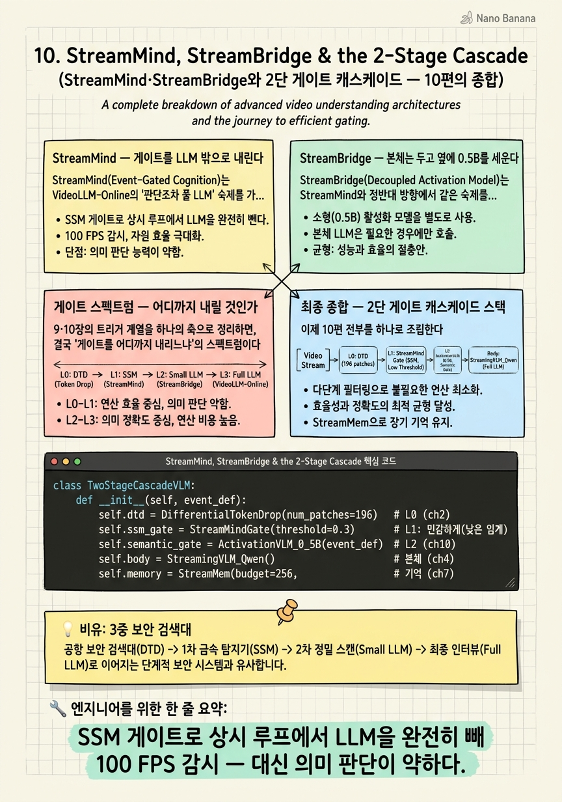

StreamMind, StreamBridge & the 2-Stage Cascade

🎯 학습 목표
- StreamMind가 SSM 게이트로 LLM을 상시 루프에서 빼는 원리를 안다
- StreamBridge의 0.5B 분리 게이트가 본체 무수정 스트리밍화를 이루는 방식을 안다
- 게이트를 어디까지 내리느냐의 스펙트럼(비용 vs 의미판단 vs 이식성)을 비교한다
- 2단 게이트 캐스케이드가 미탐/오탐 트레이드오프를 어떻게 분해하는지 설명한다
- 10편의 직교적 절감 축을 하나의 스택으로 조립할 수 있다
드디어 마지막 챕터다. Stage ③ 트리거의 두 정점 — StreamMind와 StreamBridge — 를 보고, 그다음 이 코스 전체의 10편을 하나로 종합한다.
9장 VideoLLM-Online이 남긴 가장 큰 숙제는 "1토큰 판단에도 풀 LLM이 매 프레임 돈다"였다. StreamMind와 StreamBridge는 이 판단(게이트)을 어디까지 내릴 것인가라는 질문에 서로 다른 극단으로 답한다. StreamMind는 게이트를 아예 LLM 밖 SSM으로 내려 상시 루프에서 LLM을 완전히 제거하고(100 FPS), StreamBridge는 판단을 별도 0.5B 모델로 분리해 본체를 전혀 건드리지 않는다(플러그앤플레이).
그리고 마지막 — 이 코스의 진짜 목적지다. 10편의 논문이 깎는 비용 축이 서로 직교하므로, 그대로 쌓을 수 있다. TimeChat-Online(토큰) + StreamMind(게이트) + StreamBridge(의미 검증) + StreamingVLM(고정 캐시) + StreamMem(이벤트 편향 기억)을 2단 게이트 캐스케이드로 조립하면, 미탐과 오탐이라는 근본 트레이드오프를 캐스케이드로 분해한 최소 비용 실시간 이벤트 탐지 VLM이 나온다. 이것이 참고 글의 최종 제안이자, 이 코스가 도달하는 종합이다.
핵심 내용
StreamMind — 게이트를 LLM 밖으로 내린다
StreamMind(Event-Gated Cognition)는 VideoLLM-Online의 "판단조차 풀 LLM" 숙제를 가장 급진적으로 푼다 — 상시 루프에서 LLM을 통째로 제거한다.
두 개의 부품이 있다.
EPFE(Event-Preserving Feature Extraction). state-space 모델(SSM) 기반이다. SSM은 고정 크기 내부 상태를 순환적으로 갱신하는 구조라, 프레임당 상수 비용으로 시공간 특징을 응축한 perception token을 1개 생성한다. Transformer attention이 과거 전체를 참조해 \(O(N)\)인 것과 달리, SSM은 고정 상태만 갱신하므로 프레임 수와 무관하게 일정하다.
Cognition Gate. LLM의 얕은 층에서 초기화한 초경량 게이트다. "유의미한 변화"에 대한 표현은 LLM 얕은 층에서 물려받되, 깊은 층의 비싼 추론은 제거한다. 이 게이트가 열릴 때만 풀 LLM을 호출한다.
핵심 효과는 상시 루프에서 LLM이 완전히 사라진다는 것이다. 평소엔 SSM(상수 비용) + 경량 게이트만 돌고, LLM 연산은 0이다. 그 덕에 100 FPS 풀 프레임레이트 감시가 가능해진다 — 찰나의 이벤트까지 놓치지 않는 시간 해상도다.
\[\text{VideoLLM-Online: 매 프레임 풀 LLM} \;\longrightarrow\; \text{StreamMind: 게이트 열릴 때만 LLM (평시 0)}\]
한계도 명확하다. 1토큰 게이트는 "가방을 두고 떠남" 같은 의미론적 이벤트에 약하다 — 변화(motion)는 잡아도 관련성(semantics)은 못 잡는다. 또 미탐이 치명적(복구 불가)이라 임계값을 보수적으로 잡으면 절감폭이 깎이는 트레이드오프가 있다. 그리고 EPFE·게이트는 전용 학습이 필요하다. 이 "의미 판단 약함"이 바로 StreamBridge가 메우는 지점이다.
StreamBridge — 본체는 두고 옆에 0.5B를 세운다
StreamBridge(Decoupled Activation Model)는 StreamMind와 정반대 방향에서 같은 숙제를 푼다. StreamMind가 "게이트를 최대한 내려 전용 학습"이라면, StreamBridge는 "본체를 전혀 안 건드린다".
현실적 고민에서 출발한다. Qwen2.5-VL 같은 오프라인 Video-LLM은 이미 이해 능력이 훌륭한데, 스트리밍화하겠다고 본체를 재학습하면 비용도 크고 기존 능력이 망가질 위험도 있다. StreamBridge의 답 — 본체는 그대로 두고, "언제 말할지"만 담당하는 별도의 0.5B 경량 VLM을 옆에 붙인다.
핵심 1 — Decoupled Activation Model. 0.5B급 경량 VLM이 스트림을 계속 보며 딱 하나만 판단한다 — "지금 본체를 깨울 순간인가?" 트리거가 켜지면 그제서야 본체 Video-LLM이 컨텍스트를 받아 답변한다. 흥미롭게도 이 분리 자체가 성능에도 이득이다 — 본체가 "선제 판단"의 부담에서 해방되어 이해·생성에만 집중하니 서술 품질이 오히려 좋아진다. VideoLLM-Online처럼 한 모델에 판단+생성을 다 시키면 두 능력이 간섭하는데, 나눠 놓으니 각자 잘하는 것만 한다.
핵심 2 — Round-Decayed Compression. 대화가 길어져 컨텍스트를 넘으면, 단순 truncation이 아니라 오래된 라운드일수록 강하게 압축한다. 4장 StreamingVLM의 "최근은 선명하게, 과거는 압축"을 대화 라운드 단위에 적용한 것이다.
핵심 3 — Stream-IT. 오프라인 모델에 스트리밍 능력을 이식하는 instruction 데이터셋을 공개했다. 9장 VideoLLM-Online 합성 레시피의 계보를 규모·다양성 면에서 키운 버전이다.
StreamMind와의 결정적 차이 — 게이트가 언어를 이해하는 VLM이므로 이벤트 정의를 자연어 프롬프트로 교체할 수 있다. "가방을 두고 떠나는 사람"을 프롬프트로 주면 그걸 탐지한다. 이벤트가 자주 바뀌거나 의미론적으로 복잡할 때 StreamMind 대비 결정적 우위다. 대가는 상시 비용이 더 높다는 것(0.5B가 매 프레임)과, 게이트-본체 판단 기준 불일치 가능성이다.
게이트 스펙트럼 — 어디까지 내릴 것인가
9·10장의 트리거 계열을 하나의 축으로 정리하면, 결국 "게이트를 어디까지 내리느냐"의 스펙트럼이다. 내릴수록 싸지지만 의미 판단력이 줄고, 올릴수록 똑똑하지만 비싸진다.
| 논문 | 게이트 | 상시 비용 | 의미론적 판단력 | 이식성 | |---|---|---|---|---| | VideoLLM-Online | 본체 LLM 자신(EOS) | 높음 | 최고 | 본체 재학습 | | Dispider | 본체 1토큰(TODO/ANS) | 중상 | 높음 | 본체 재학습 | | StreamBridge | 별도 0.5B VLM | 중간 | 좋음(자연어 정의) | 본체 무수정 | | StreamMind | SSM + 경량 게이트 | 최저(100 FPS) | 제한적 | 전용 학습 |
이 표가 이 코스 트리거 파트의 결론이다. 단일 최적해는 없다 — 탐지할 이벤트의 성격이 선택을 좌우한다.
- 이벤트가 고정적·단순하면(움직임 기반) → StreamMind. 최저 비용, 100 FPS.
- 이벤트가 자주 바뀌거나 의미론적으로 복잡하면 → StreamBridge. 자연어로 정의 교체, 본체 무수정.
그런데 여기서 핵심 통찰이 나온다. StreamMind의 약점(의미 판단 약함)과 StreamBridge의 약점(상시 비용 높음)이 상보적이다. StreamMind는 싸지만 관련성을 못 잡고, StreamBridge는 관련성을 잡지만 비싸다. 그렇다면 둘을 캐스케이드로 쌓으면 — StreamMind가 싸게 1차로 거르고, 그 통과분에만 StreamBridge를 돌려 의미를 검증하면 — 각자의 약점을 상대가 메운다. 이것이 다음 섹션의 최종 아키텍처로 이어지는 결정적 발상이다.
최종 종합 — 2단 게이트 캐스케이드 스택
이제 10편 전부를 하나로 조립한다. 설계 원칙은 하나 — 각 논문이 깎는 비용 축이 서로 직교하므로 그대로 쌓을 수 있다. 핵심 아이디어는 미탐(복구 불가)과 오탐(비용 낭비)이라는 트레이드오프를 캐스케이드로 분해하는 것이다.
`
프레임 스트림 (임의 FPS)
│
[L0] 토큰 다이어트 ─ DTD (TimeChat-Online)
│ 변화 없는 패치 드롭 · drop률 급증을 L1에 이벤트 프라이어로 전달
▼
[L1] 상시 게이트 ─ EPFE + Cognition Gate (StreamMind)
│ SSM 상수 비용 · 100 FPS 감시 · 임계값 낮게(민감하게)
├── 닫힘(대부분) ──▶ LLM 연산 0 · 다음 프레임
▼ 열림
[L2] 의미 게이트 ─ 0.5B Activation VLM (StreamBridge)
│ 이벤트 정의를 자연어로 검증 · L1의 오탐을 여기서 필터
├── 기각 ──▶ 본체 미호출 · 로그만
▼ 확정
[본체] Qwen2.5-VL + StreamingVLM 3구역 고정 캐시
│ 이벤트 서술·판단 생성 (드물게) · Round-Decayed 대화 압축
▼
[기억] StreamMem 고정 KV (+ 선택: ReKV 디스크 오프로드)
프록시 질의에 이벤트 정의를 심어 편향 · 사후 질의 대응
`
각 층의 논리를 짚자.
- L0 (TimeChat-Online) — 정보 없는 토큰을 최상류에서 드롭. drop률을 L1 게이트의 보조 입력으로 넣어 recall을 올린다. 카메라 모션이 크면 bypass.
- L1 (StreamMind) — 100 FPS 상시 감시. 임계값을 의도적으로 낮게 잡아 미탐(복구 불가)을 구조적으로 억제한다. StreamMind 단독의 약점("민감하면 오탐 증가")은 여기서 문제가 안 된다 — 오탐 처리를 L2가 맡으니 L1은 recall에만 최적화하면 된다.
- L2 (StreamBridge) — L1이 열린 순간에만 0.5B가 가동돼, 자연어 이벤트 정의와 대조 검증한다. StreamMind의 "의미 판단 약함"을 정확히 메운다. 원안은 0.5B가 매 프레임 돌지만, 여기서는 L1 통과분에만 돌아 상시 비용이 아니다.
- 본체 (StreamingVLM) — 확정 이벤트에만 서술 생성. 고정 캐시로 프레임당 비용이 시간과 무관.
- 기억 (StreamMem) — 7장의 열린 연구 지점을 채택 — 프록시 질의에 이벤트 정의를 심어 관련 토큰이 살아남도록 편향. 포렌식이 필요하면 ReKV 오프로드 병행.
이 스택의 아름다움은 트레이드오프 분해에 있다. 단일 게이트는 "민감하게 잡으면 오탐 폭증, 보수적으로 잡으면 미탐 위험"이라는 딜레마에 갇힌다. 캐스케이드는 이를 분해한다 — L1은 미탐을 막는 데(recall) 전념하고, 그로 인한 오탐은 L2가 정밀하게(precision) 걸러낸다. 두 목표를 하나의 게이트가 동시에 만족시키려 애쓰는 대신, 역할을 나눠 각자 최적화한다.
| 상황 | 가동 모듈 | 비용 | 빈도 | |---|---|---|---| | 평시(이벤트 없음) | DTD + EPFE + Gate | 최저(LLM 0) | 대부분 | | L1 발화(변화 감지) | + 0.5B 의미 검증 | 낮음 | 가끔 | | 이벤트 확정 | + 본체 생성 | 높음 | 드묾 | | 사후 질의 | + StreamMem/ReKV 검색 | 중간 | 요청 시 |
이것이 이 코스가 도달한 종합이다. 정보가 없는 곳에 연산을 쓰지 않고, 무거운 모델은 드물게 돌리며, 압축 실패를 공짜 이벤트 신호로 활용하는 — 세 원리가 하나의 아키텍처로 수렴한다. 학습은 VideoLLM-Online 합성 레시피와 Stream-IT로 데이터를 만들고, 게이트 타이밍은 MMDuet2식 멀티턴 RL(PAUC 보상)로 미세조정한다. 클래스 불균형(99% 침묵)은 거대 본체가 아니라 작은 게이트들만 감당하므로 학습이 안정적이다. 그리고 "이벤트 편향 프록시 질의"는 아직 열린 연구 지점 — 이 스택을 실제로 구현하는 사람에게 논문화 가능한 자체 기여로 남는다.
💡 비유로 이해하기
공항 보안을 생각하자. 모든 승객을 정밀 신체검사(풀 LLM)하면 정확하지만 줄이 끝없이 밀린다. 반대로 아무도 검사 안 하면 위험하다. 현명한 공항은 단계별 검색대를 쓴다.
1차 — 금속 탐지기(L1, StreamMind). 모든 승객이 빠르게 통과한다. 상수 시간이고 100명이 지나가도 일정하다. 일부러 민감하게 맞춰둔다 — 동전 하나에도 울리게. 왜? 진짜 흉기를 놓치는 것(미탐)이 치명적이니, 놓치느니 자주 울리는 게 낫다. 대부분은 여기서 통과(닫힘)하고 아무 일 없이 게이트로 간다.
2차 — 보안요원 정밀 확인(L2, StreamBridge). 탐지기가 울린 사람만 불러 세워, "이게 뭡니까?"라고 묻고 가방을 연다(자연어 검증). 열쇠뭉치였으면 통과, 진짜 흉기면 확정. 금속 탐지기가 만든 오탐(동전·열쇠)을 여기서 걸러낸다. 이 요원은 탐지기가 부른 사람만 상대하니 늘 여유롭다.
3차 — 전문 조사관(본체, StreamingVLM). 진짜 위협이 확정된 극소수만 조사실로 데려가 상세히 처리한다. 그리고 모든 기록은 CCTV 아카이브(StreamMem)에 남겨, 나중에 "저 사람 아까 어디서 왔지?"를 조회한다.
핵심은 역할 분해다. 금속 탐지기 하나로 "빠르면서 정확하게"를 동시에 하려 하면 실패한다 — 민감하면 다 울리고, 둔감하면 놓친다. 대신 탐지기는 놓치지 않는 데(recall)만, 요원은 걸러내는 데(precision)만 집중하면, 전체가 싸면서도 정확해진다. 이것이 2단 게이트 캐스케이드의 전부다.
💻 코드 예시
10편을 하나로 엮은 2단 게이트 캐스케이드를 오케스트레이션 골격으로 구현하자. 각 프레임이 L0→L1→L2→본체→기억을 통과하되, 대부분은 L1에서 멈춘다.
class TwoStageCascadeVLM:
def __init__(self, event_def):
self.dtd = DifferentialTokenDrop(num_patches=196) # L0 (ch2)
self.ssm_gate = StreamMindGate(threshold=0.3) # L1: 민감하게(낮은 임계)
self.semantic_gate = ActivationVLM_0_5B(event_def) # L2 (ch10)
self.body = StreamingVLM_Qwen() # 본체 (ch4)
self.memory = StreamMem(budget=256, # 기억 (ch7)
event_bias=embed(event_def)) # 이벤트 편향 프록시
self.event_def = event_def
def process(self, frame):
# L0 — 변화 패치만 통과 + drop률을 이벤트 프라이어로
tokens, drop_rate = self.dtd(frame)
event_prior = 1.0 - drop_rate # survival↑ = 변화↑
# L1 — 상시 게이트(SSM 상수 비용, LLM 0). 대부분 여기서 종료.
gate = self.ssm_gate.step(tokens, prior=event_prior) # 100 FPS
if not gate.open:
return None # 평시: LLM 연산 0
# L2 — 열렸을 때만 0.5B가 자연어 이벤트 정의로 검증 (오탐 필터)
if not self.semantic_gate.confirm(tokens, self.event_def):
log("L1 fired but L2 rejected") # 본체 미호출
return None
# 본체 — 확정 이벤트만 서술 생성 (드물게), 고정 캐시
answer = self.body.generate(tokens, memory=self.memory)
# 기억 — 이벤트 편향 고정 KV에 기록 (사후 질의 대비)
self.memory.update(*self.body.last_kv())
return answer
```제어 흐름 자체가 비용 전략이다. 대부분의 프레임은 if not gate.open: return None에서 끝나 LLM을 한 번도 안 돌린다 — L0의 패치 비교와 L1의 SSM 게이트만 상수 비용으로 도니 100 FPS가 나온다. event_prior = 1.0 - drop_rate가 2장의 공짜 신호를 L1에 주입하는 지점이다. L1 임계값을 0.3으로 낮게 잡은 게 핵심 설계 — 미탐을 막으려 일부러 민감하게 하고, 그로 인한 오탐은 semantic_gate.confirm(L2)이 자연어 이벤트 정의로 걸러낸다. 두 게이트가 recall과 precision을 나눠 맡는 트레이드오프 분해가 코드에 그대로 드러난다. event_bias=embed(event_def)는 7장의 열린 연구 지점 — 기억마저 목표 이벤트로 편향시킨다. 각 부품이 앞선 9개 챕터에서 온 것임을 확인하라.
🏭 현업에서의 평가
✅ 시니어가 보는 것
- 게이트 스펙트럼(비용-의미판단-이식성)을 이해하고 이벤트 성격에 맞게 선택하는가
- 캐스케이드가 recall(L1)과 precision(L2)을 분리해 단일 게이트 딜레마를 푸는 원리를 아는가
- 10편의 절감 축이 직교함을 근거로 조합 가능성을 설명하는가
⚠️ 레드 플래그
- 단일 만능 게이트를 고집하며 미탐/오탐 동시 최적화의 불가능성을 못 봄
- L2를 상시로 돌려 StreamBridge 원안의 비용 문제를 그대로 답습
- 각 기법을 독립적으로만 알고 조합 시의 시너지·간섭을 설계하지 못함
🎤 예상 인터뷰 질문
- 단일 게이트로 미탐과 오탐을 동시에 최소화할 수 없는 이유와, 캐스케이드가 이를 어떻게 분해하는가?
- L1 임계값을 일부러 낮게 잡는 근거는? 그 대가는 어디서 회수되는가?
- 탐지 이벤트가 매주 바뀌는 제품이라면 이 스택의 어디를 어떻게 바꾸겠는가?
✨ 핵심 요약
StreamMind
SSM 게이트로 상시 루프에서 LLM을 완전히 빼 100 FPS 감시 — 대신 의미 판단이 약하다.
StreamBridge
0.5B 게이트를 본체 옆에 붙여 무수정 스트리밍화 — 자연어로 이벤트 정의를 교체한다.
게이트 스펙트럼
게이트를 내릴수록 싸지만 의미 판단이 줄고, 올릴수록 똑똑하지만 비싸진다 — 단일 최적해는 없다.
상보적 약점
StreamMind(싸지만 둔함)와 StreamBridge(똑똑하지만 비쌈)의 약점이 캐스케이드로 상쇄된다.
트레이드오프 분해
L1은 recall(미탐 억제), L2는 precision(오탐 필터)에 각각 전념해 딜레마를 나눈다.
직교 조합
10편의 절감 축이 직교하므로 L0~기억까지 그대로 쌓아 최소 비용 스택을 만든다.
이벤트 편향(자체 기여)
StreamMem 프록시에 이벤트 정의를 심는 편향은 아직 열린 연구 — 논문화 후보다.